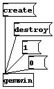
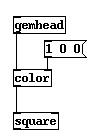
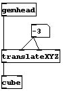
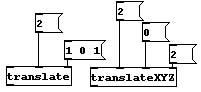
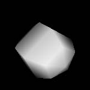
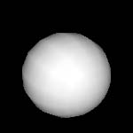

There are a number of objects which are the foundation for GEM.
These objects are used in every patch and control the graphics and rendering.
[gemwin] - The window manager
[gemhead] - The start of a rendering chain
manips - Move an object in the window
geos - Render a shape




This patch will render a red square. The [gemhead] object signifies the start of rendering. The [color] object sets the color for all objects after it in the chain. The [square] object renders a square into the graphics window based on the current color, texturing, and transformations. In this case, there is no texturing and no transformation.
Every rendering chain MUST start with a [gemhead]. If you do not put a [gemhead] at the beginning of the chain, then nothing will be rendered for that part of the patch.


The graphics are transformed and moved by the manipulator objects, or the manips. GEM has the following manips:
[color] - set the color with a vector
[colorRGB] - set the color with 3 discrete values
[rotate] - rotate with an angle and vector
[rotateXYZ] - rotate with 3 discrete values
[scale] - scale with a vector
[scaleXYZ] - scale with 3 discrete values
[translate] - translate with a vector
[translateXYZ] - translate with 3 discrete values
To understand the difference between the vector and discrete values version, realize that everything in is defined in 3 dimensions. These dimensions can be XYZ values, or RGB colors.

The two translate objects above will do exactly the same thing in a patch, but they provide two different ways to do it. [translate] accepts a scalar and vector. [translateXYZ] accepts three floats which specify a point in space. The manips will transform any object which appears after it in the rendering chain.

[square] - render a square
[circle] - render a circle
[triangle] - render a triangle
[cube] - render a cube
[sphere] - render a sphere
[cone] - render a cone
The [square], [circle], [cube], and [triangle] objects have a right-hand inlet to set the size of the shape. The default size is 1.
The [cone] and [sphere] objects are not perfectly smooth. They are actually composed of a number of polygons. In order to control the rendering better, the middle inlet is the size of the object, while the right-hand inlet is the number of slices to define the shape. Take a look at the patch gem_basic/gem3.sphere.pd to see how the number of slices can change the look of a sphere. Don't worry about the [world_light] object, it is just there to make it easier to see the difference in the number of slices. Make sure to click the 'lighting 0' message before closing the patch (if you don't, then other patches will probably be completely black until you quit and restart pd/GEM).
Your graphics window should look like this for 5 and 15 slices:
